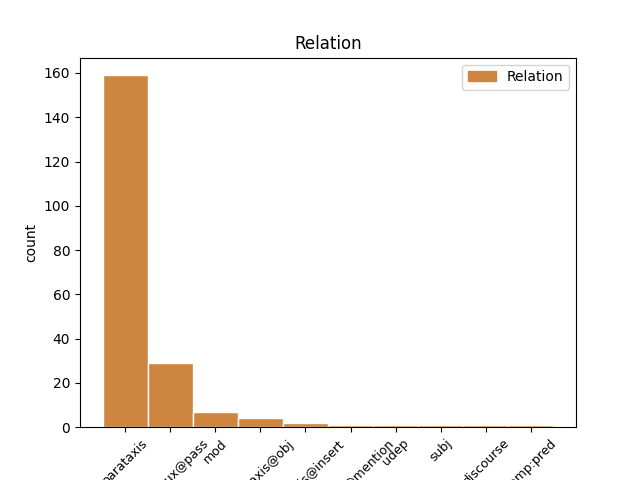
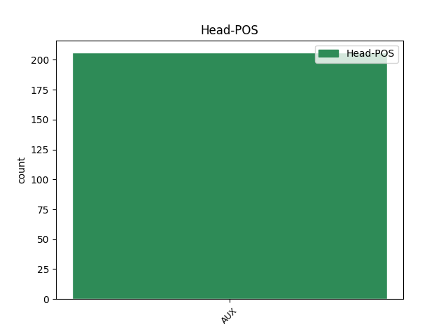
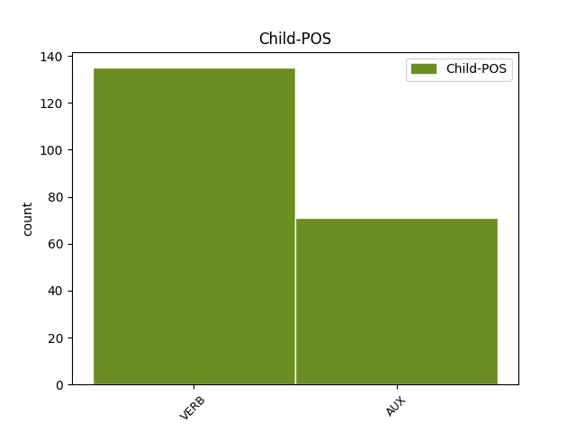

Distribution of features within this leaf



Agreement Rules sorted by frequency.
- When the dependent token is the parataxis(parataxis) of the head token, and the head token is AUX
1 #tfaordinario _ _ _ _ 0 _ _ _
2 è essere AUX VA Mood=Ind|Number=Sing|Person=3|Tense=Pres|VerbForm=Fin 0 _ _ _
3 stato _ _ _ _ 0 _ _ _
4 il _ _ _ _ 0 _ _ _
5 fondo _ _ _ _ 0 _ _ _
6 cassa _ _ _ _ 0 _ _ _
7 per _ _ _ _ 0 _ _ _
8 la _ _ _ _ 0 _ _ _
9 riforma _ _ _ _ 0 _ _ _
10 di _ _ _ _ 0 _ _ _
11 la _ _ _ _ 0 _ _ _
12 #labuonascuola _ _ _ _ 0 _ _ _
13 di _ _ _ _ 0 _ _ _
14 @user _ _ _ _ 0 _ _ _
15 . _ _ _ _ 0 _ _ _
16 Beneficienza _ _ _ _ 0 _ _ _
17 la _ _ _ _ 0 _ _ _
18 faccio fare VERB V Mood=Ind|Number=Sing|Person=1|Tense=Pres|VerbForm=Fin 2 parataxis _ _
19 quando _ _ _ _ 0 _ _ _
20 dico _ _ _ _ 0 _ _ _
21 io _ _ _ _ 0 _ _ _
22 !!!! _ _ _ _ 0 _ _ _
1 Non _ _ _ _ 0 _ _ _
2 mi _ _ _ _ 0 _ _ _
3 fido _ _ _ _ 0 _ _ _
4 di _ _ _ _ 0 _ _ _
5 Mario _ _ _ _ 0 _ _ _
6 Monti _ _ _ _ 0 _ _ _
7 . _ _ _ _ 0 _ _ _
8 Mai _ _ _ _ 0 _ _ _
9 fidar _ _ _ _ 0 _ _ _
10 si _ _ _ _ 0 _ _ _
11 di _ _ _ _ 0 _ _ _
12 chi _ _ _ _ 0 _ _ _
13 non _ _ _ _ 0 _ _ _
14 è _ _ _ _ 0 _ _ _
15 stato essere AUX VA Gender=Masc|Number=Sing|Tense=Past|VerbForm=Part 0 _ _ _
16 coinvolto coinvolgere VERB V Gender=Masc|Number=Sing|Tense=Past|VerbForm=Part 15 comp:aux@pass _ _
17 in _ _ _ _ 0 _ _ _
18 uno _ _ _ _ 0 _ _ _
19 scandalo _ _ _ _ 0 _ _ _
20 sessuale _ _ _ _ 0 _ _ _
21 . _ _ _ _ 0 _ _ _
1 Non _ _ _ _ 0 _ _ _
2 ho avere AUX VA Mood=Ind|Number=Sing|Person=1|Tense=Pres|VerbForm=Fin 0 _ _ _
3 neanche _ _ _ _ 0 _ _ _
4 guardato _ _ _ _ 0 _ _ _
5 il _ _ _ _ 0 _ _ _
6 " _ _ _ _ 0 _ _ _
7 patt _ _ _ _ 0 _ _ _
8 ( _ _ _ _ 0 _ _ _
9 cc _ _ _ _ 0 _ _ _
10 ) _ _ _ _ 0 _ _ _
11 o _ _ _ _ 0 _ _ _
12 educativo _ _ _ _ 0 _ _ _
13 " _ _ _ _ 0 _ _ _
14 , _ _ _ _ 0 _ _ _
15 tanto _ _ _ _ 0 _ _ _
16 so sapere VERB V Mood=Ind|Number=Sing|Person=1|Tense=Pres|VerbForm=Fin 2 mod _ _
17 che _ _ _ _ 0 _ _ _
18 non _ _ _ _ 0 _ _ _
19 avrò _ _ _ _ 0 _ _ _
20 i _ _ _ _ 0 _ _ _
21 requisiti _ _ _ _ 0 _ _ _
22 per _ _ _ _ 0 _ _ _
23 essere _ _ _ _ 0 _ _ _
24 meritevole _ _ _ _ 0 _ _ _
25 : _ _ _ _ 0 _ _ _
26 la _ _ _ _ 0 _ _ _
27 buona _ _ _ _ 0 _ _ _
28 scuola _ _ _ _ 0 _ _ _
29 è _ _ _ _ 0 _ _ _
30 " _ _ _ _ 0 _ _ _
31 altrove _ _ _ _ 0 _ _ _
32 " _ _ _ _ 0 _ _ _
33 !!! _ _ _ _ 0 _ _ _
1 Governo _ _ _ _ 0 _ _ _
2 Monti _ _ _ _ 0 _ _ _
3 : _ _ _ _ 0 _ _ _
4 Golpe _ _ _ _ 0 _ _ _
5 ? _ _ _ _ 0 _ _ _
6 Alieni _ _ _ _ 0 _ _ _
7 ? _ _ _ _ 0 _ _ _
8 Massoni _ _ _ _ 0 _ _ _
9 ? _ _ _ _ 0 _ _ _
10 : _ _ _ _ 0 _ _ _
11 Il _ _ _ _ 0 _ _ _
12 Tg1 _ _ _ _ 0 _ _ _
13 è essere AUX V Mood=Ind|Number=Sing|Person=3|Tense=Pres|VerbForm=Fin 0 _ _ _
14 attonito _ _ _ _ 0 _ _ _
15 : _ _ _ _ 0 _ _ _
16 ma _ _ _ _ 0 _ _ _
17 chi _ _ _ _ 0 _ _ _
18 sono essere AUX V Mood=Ind|Number=Plur|Person=3|Tense=Pres|VerbForm=Fin 13 parataxis@obj _ _
19 questi _ _ _ _ 0 _ _ _
20 ? _ _ _ _ 0 _ _ _
21 Perché _ _ _ _ 0 _ _ _
22 fra _ _ _ _ 0 _ _ _
23 le _ _ _ _ 0 _ _ _
24 donne _ _ _ _ 0 _ _ _
25 non _ _ _ _ 0 _ _ _
26 ce _ _ _ _ 0 _ _ _
27 n' _ _ _ _ 0 _ _ _
28 è _ _ _ _ 0 _ _ _
29 ne... _ _ _ _ 0 _ _ _
30 http://t.co/0lVOZdTc _ _ _ _ 0 _ _ _
1 * _ _ _ _ 0 _ _ _
2 : _ _ _ _ 0 _ _ _
3 " _ _ _ _ 0 _ _ _
4 Il _ _ _ _ 0 _ _ _
5 governo _ _ _ _ 0 _ _ _
6 Monti _ _ _ _ 0 _ _ _
7 ? _ _ _ _ 0 _ _ _
8 E' essere AUX V Mood=Ind|Number=Sing|Person=3|Tense=Pres|VerbForm=Fin 0 _ _ _
9 in _ _ _ _ 0 _ _ _
10 le _ _ _ _ 0 _ _ _
11 mani _ _ _ _ 0 _ _ _
12 di _ _ _ _ 0 _ _ _
13 Berlusconi _ _ _ _ 0 _ _ _
14 " _ _ _ _ 0 _ _ _
15 , _ _ _ _ 0 _ _ _
16 dicono dire VERB V Mood=Ind|Number=Plur|Person=3|Tense=Pres|VerbForm=Fin 8 parataxis@insert _ _
17 a _ _ _ _ 0 _ _ _
18 il _ _ _ _ 0 _ _ _
19 Pd _ _ _ _ 0 _ _ _
20 http://t.co/i41Ytkl9 _ _ _ _ 0 _ _ _
1 l' _ _ _ _ 0 _ _ _
2 italia _ _ _ _ 0 _ _ _
3 confida _ _ _ _ 0 _ _ _
4 in _ _ _ _ 0 _ _ _
5 Mario _ _ _ _ 0 _ _ _
6 Monti _ _ _ _ 0 _ _ _
7 .... _ _ _ _ 0 _ _ _
8 anche _ _ _ _ 0 _ _ _
9 se _ _ _ _ 0 _ _ _
10 bene _ _ _ _ 0 _ _ _
11 che _ _ _ _ 0 _ _ _
12 va andare VERB V Mood=Ind|Number=Sing|Person=3|Tense=Pres|VerbForm=Fin 13 udep _ _
13 siamo essere AUX V Mood=Ind|Number=Plur|Person=1|Tense=Pres|VerbForm=Fin 0 _ _ _
14 rovinati _ _ _ _ 0 _ _ _
15 . _ _ _ _ 0 _ _ _
1 RT _ _ _ _ 0 _ _ _
2 @user _ _ _ _ 0 _ _ _
3 : _ _ _ _ 0 _ _ _
4 Uscire _ _ _ _ 0 _ _ _
5 da _ _ _ _ 0 _ _ _
6 la _ _ _ _ 0 _ _ _
7 stanza _ _ _ _ 0 _ _ _
8 in _ _ _ _ 0 _ _ _
9 pigiama _ _ _ _ 0 _ _ _
10 e _ _ _ _ 0 _ _ _
11 trovar _ _ _ _ 0 _ _ _
12 si _ _ _ _ 0 _ _ _
13 davanti _ _ _ _ 0 _ _ _
14 sconosciuti _ _ _ _ 0 _ _ _
15 che _ _ _ _ 0 _ _ _
16 ti _ _ _ _ 0 _ _ _
17 fissano _ _ _ _ 0 _ _ _
18 . _ _ _ _ 0 _ _ _
19 Cos' _ _ _ _ 0 _ _ _
20 è essere AUX V Mood=Ind|Number=Sing|Person=3|Tense=Pres|VerbForm=Fin 23 discourse _ SpaceAfter=No
21 ? _ _ _ _ 0 _ _ _
22 Non _ _ _ _ 0 _ _ _
23 avete avere AUX VA Mood=Ind|Number=Plur|Person=2|Tense=Pres|VerbForm=Fin 0 _ _ _
24 mai _ _ _ _ 0 _ _ _
25 visto _ _ _ _ 0 _ _ _
26 un _ _ _ _ 0 _ _ _
27 pigiama _ _ _ _ 0 _ _ _
28 co… _ _ _ _ 0 _ _ _
1 @user @user VERB V Mood=Ind|Number=Sing|Person=1|Tense=Pres|VerbForm=Fin 4 vocative@mention _ _
2 e _ _ _ _ 0 _ _ _
3 poi _ _ _ _ 0 _ _ _
4 vogliono volere AUX VM Mood=Ind|Number=Plur|Person=3|Tense=Pres|VerbForm=Fin 0 _ _ _
5 fare _ _ _ _ 0 _ _ _
6 #labuonascuola _ _ _ _ 0 _ _ _
7 con _ _ _ _ 0 _ _ _
8 i _ _ _ _ 0 _ _ _
9 #Quota96Scuola _ _ _ _ 0 _ _ _
10 , _ _ _ _ 0 _ _ _
11 ci _ _ _ _ 0 _ _ _
12 sarebbe _ _ _ _ 0 _ _ _
13 da _ _ _ _ 0 _ _ _
14 ridere _ _ _ _ 0 _ _ _
15 , _ _ _ _ 0 _ _ _
16 invece _ _ _ _ 0 _ _ _
17 noi _ _ _ _ 0 _ _ _
18 ..... _ _ _ _ 0 _ _ _
19 inorridiamo _ _ _ _ 0 _ _ _
20 ! _ _ _ _ 0 _ _ _
21 http://t.co/g8u7YEOJpm _ _ _ _ 0 _ _ _
Disagree Examples:
1 @user _ _ _ _ 0 _ _ _
2 se _ _ _ _ 0 _ _ _
3 continui _ _ _ _ 0 _ _ _
4 sarò essere AUX VA Mood=Ind|Number=Sing|Person=1|Tense=Fut|VerbForm=Fin 0 _ _ _
5 costretto costringere VERB V Gender=Masc|Number=Sing|Tense=Past|VerbForm=Part 4 comp:aux@pass _ _
6 a _ _ _ _ 0 _ _ _
7 dar _ _ _ _ 0 _ _ _
8 ti _ _ _ _ 0 _ _ _
9 l' _ _ _ _ 0 _ _ _
10 oscar _ _ _ _ 0 _ _ _
1 Bersani _ _ _ _ 0 _ _ _
2 : _ _ _ _ 0 _ _ _
3 « _ _ _ _ 0 _ _ _
4 Governo _ _ _ _ 0 _ _ _
5 Monti _ _ _ _ 0 _ _ _
6 punti _ _ _ _ 0 _ _ _
7 a _ _ _ _ 0 _ _ _
8 il _ _ _ _ 0 _ _ _
9 cuore _ _ _ _ 0 _ _ _
10 di _ _ _ _ 0 _ _ _
11 gli _ _ _ _ 0 _ _ _
12 italiani _ _ _ _ 0 _ _ _
13 » _ _ _ _ 0 _ _ _
14 . _ _ _ _ 0 _ _ _
15 Il _ _ _ _ 0 _ _ _
16 fegato _ _ _ _ 0 _ _ _
17 se _ _ _ _ 0 _ _ _
18 lo _ _ _ _ 0 _ _ _
19 sono essere AUX VA Mood=Ind|Number=Plur|Person=3|Tense=Pres|VerbForm=Fin 0 _ _ _
20 rovinati rovinare VERB V Gender=Masc|Number=Plur|Tense=Past|VerbForm=Part 19 comp:aux@pass _ _
21 con _ _ _ _ 0 _ _ _
22 il _ _ _ _ 0 _ _ _
23 governo _ _ _ _ 0 _ _ _
24 Berlusconi _ _ _ _ 0 _ _ _
25 . _ _ _ _ 0 _ _ _
1 Penso _ _ _ _ 0 _ _ _
2 che _ _ _ _ 0 _ _ _
3 babbo _ _ _ _ 0 _ _ _
4 natale _ _ _ _ 0 _ _ _
5 sia essere AUX VA Mood=Sub|Number=Sing|Person=3|Tense=Pres|VerbForm=Fin 0 _ _ _
6 un _ _ _ _ 0 _ _ _
7 po _ _ _ _ 0 _ _ _
8 invecchiato _ _ _ _ 0 _ _ _
9 .. _ _ _ _ 0 _ _ _
10 non _ _ _ _ 0 _ _ _
11 sente _ _ _ _ 0 _ _ _
12 più _ _ _ _ 0 _ _ _
13 tanto _ _ _ _ 0 _ _ _
14 bene _ _ _ _ 0 _ _ _
15 , _ _ _ _ 0 _ _ _
16 gli _ _ _ _ 0 _ _ _
17 avevo avere AUX VA Mood=Ind|Number=Sing|Person=1|Tense=Imp|VerbForm=Fin 5 parataxis _ _
18 chiesto _ _ _ _ 0 _ _ _
19 mari _ _ _ _ 0 _ _ _
20 e _ _ _ _ 0 _ _ _
21 monti _ _ _ _ 0 _ _ _
22 ed _ _ _ _ 0 _ _ _
23 invece _ _ _ _ 0 _ _ _
24 mi _ _ _ _ 0 _ _ _
25 ha _ _ _ _ 0 _ _ _
26 portato _ _ _ _ 0 _ _ _
27 Mario _ _ _ _ 0 _ _ _
28 Monti _ _ _ _ 0 _ _ _
29 ! _ _ _ _ 0 _ _ _
1 Mai _ _ _ _ 0 _ _ _
2 un _ _ _ _ 0 _ _ _
3 partito _ _ _ _ 0 _ _ _
4 di _ _ _ _ 0 _ _ _
5 sinistra _ _ _ _ 0 _ _ _
6 era essere AUX VA Mood=Ind|Number=Sing|Person=3|Tense=Imp|VerbForm=Fin 0 _ _ _
7 arrivato arrivare VERB V Gender=Masc|Number=Sing|Tense=Past|VerbForm=Part 6 comp:aux@pass _ _
8 a _ _ _ _ 0 _ _ _
9 il _ _ _ _ 0 _ _ _
10 40 _ _ _ _ 0 _ _ _
11 % _ _ _ _ 0 _ _ _
12 . _ _ _ _ 0 _ _ _
13 E _ _ _ _ 0 _ _ _
14 neanche _ _ _ _ 0 _ _ _
15 adesso _ _ _ _ 0 _ _ _
16 . _ _ _ _ 0 _ _ _
17 [ _ _ _ _ 0 _ _ _
18 @user _ _ _ _ 0 _ _ _
19 ] _ _ _ _ 0 _ _ _
1 Francesca _ _ _ _ 0 _ _ _
2 Pascale _ _ _ _ 0 _ _ _
3 : _ _ _ _ 0 _ _ _
4 " _ _ _ _ 0 _ _ _
5 La _ _ _ _ 0 _ _ _
6 Meloni _ _ _ _ 0 _ _ _
7 è essere AUX V Mood=Ind|Number=Sing|Person=3|Tense=Pres|VerbForm=Fin 0 _ _ _
8 una _ _ _ _ 0 _ _ _
9 fascista _ _ _ _ 0 _ _ _
10 moderna _ _ _ _ 0 _ _ _
11 " _ _ _ _ 0 _ _ _
12 . _ _ _ _ 0 _ _ _
13 Farà fare VERB V Mood=Ind|Number=Sing|Person=3|Tense=Fut|VerbForm=Fin 7 parataxis _ _
14 jogging _ _ _ _ 0 _ _ _
15 su _ _ _ _ 0 _ _ _
16 Roma _ _ _ _ 0 _ _ _
17 . _ _ _ _ 0 _ _ _
18 [ _ _ _ _ 0 _ _ _
19 @user _ _ _ _ 0 _ _ _
20 ] _ _ _ _ 0 _ _ _